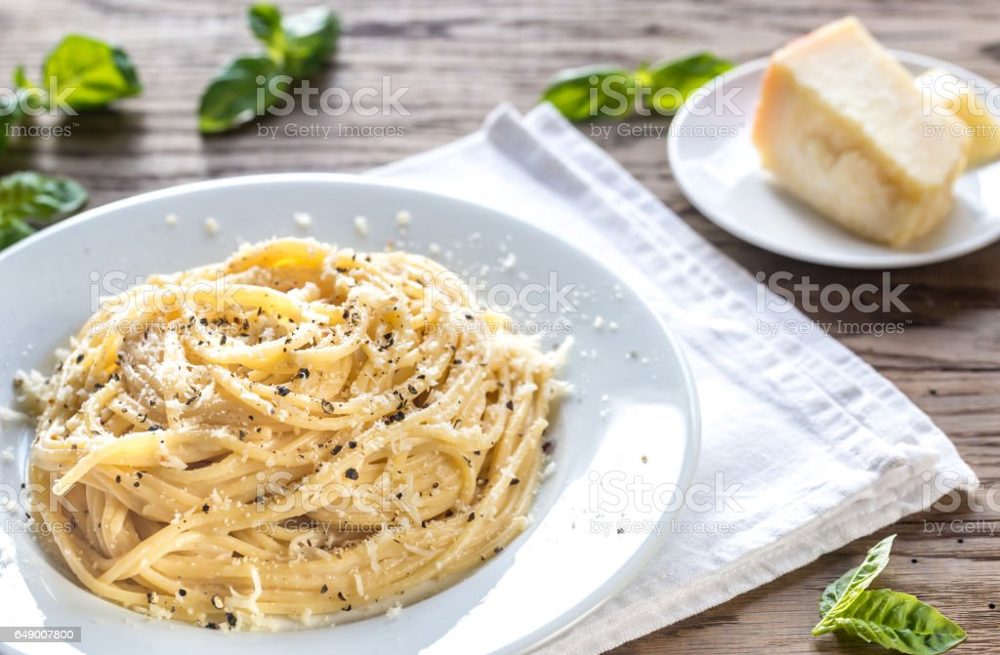

Cacio e Pepe

The recipe for cacio e pepe pasta is part of the ancient Lazio culinary tradition and anyone who has been to Rome to eat in trattorias or restaurants of typical local cuisine knows it well.
In roman dialect, cacio means and pepe refers to pepper. Just these simple ingredients cooked right can result in a burst of Italian flavor.
-Ingredients
- 200g bucatini or spaghetti
- 25g butter
- 2 tsp whole black peppercorns, ground, or 1 tsp freshly ground black pepper
- 50g pecorino or parmesan, finely grated
-Steps
- Cook the pasta for 2 mins less than pack instructions state, in salted boiling water. Meanwhile, melt the butter in a medium frying pan over a low heat, then add the ground black pepper and toast for a few minutes.
- Drain the pasta, keeping 200ml of the pasta water. Tip the pasta and 100ml of the pasta water into the pan with the butter and pepper. Toss briefly, then scatter over the parmesan
evenly, but don’t stir – wait for the cheese to melt for 30 seconds, then once melted, toss everything well, and stir together. This prevents the cheese from clumping or going stringy and makes
a smooth, shiny sauce. Add a splash more pasta water if you need to, to loosen the sauce and coat the pasta. Serve immediately with a good grating of black pepper.
-Sources: